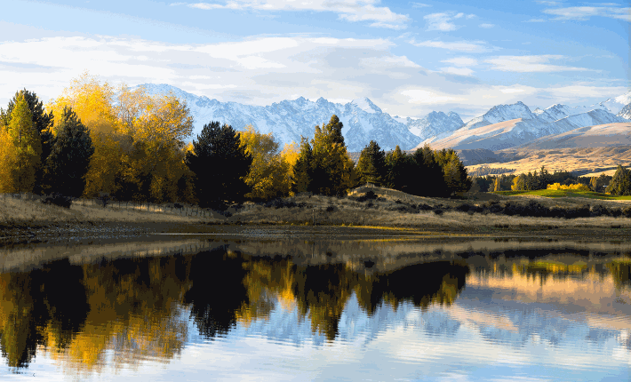
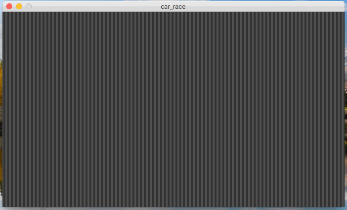
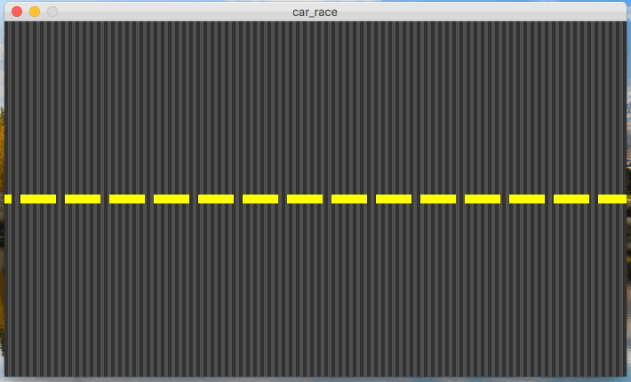
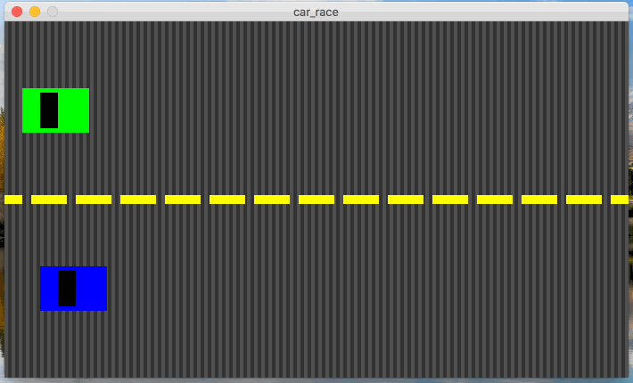

In this assignment, you will write a processing program that generates an animation of two cars racing against each-other.
Below is a gif demonstrating what the animation should look like:

This is a top-down view of two cars racing to a finish line on a race-track. Notice a few things about this animation:
mouseX and/or mouseY variables to get this working correctly.
Each car should stay in it’s own lane.As you can see, there are a lot of “moving parts” in this animation, which might make it seem hard. Don’t be intimidated! If you work on the animation one part at-a-time, it is easier to think about and write the code for. I recommend that you work on this animation in several phases, rather than trying to do it all at once.
First, work on getting the road pattern drawn and animating correctly. For example:

The road pattern is really just alternating dark/light dray lines (or rectangles) that span the entire height of the canvas. If you zoom way up on the road, the pattern is simply:
You should use a for-loop to repeat this pattern on the road. Once this is working, then add in the road stripes:

Then, add the cars in, without worrying about tracking the mouse positions:

The last step should be making the cars follow the mouse position.
You must use the setup and draw functions, like we discussed in class. Also, start early! This assignment shouldn’t be super “hard”, but it will probably take much trial-and-error get the various patterns animating properly. You should start at least a few days before the deadline, ask questions, visit office hours, etc.
Name the program car_race.pde.
You should do your best to match the colors and sizes of the road and lane stripes, but they don’t need to be “pixel-for-pixel” perfect. You are welcome to customize the color and look/style of the finish line and the race-cars. However, the bottom car should be the one that wins.
The canvas should be between 600 and 800 pixels wide, and between 400 and 500 pixels tall.
All of your programming should be well-formatted and easy for the graders to read and comprehend. You should follow the style guidelines that we have discussed in class. Each program file should have a header comment at the top that has roughly the following format:
//
// Author: Student Name
// Description:
// A short description of what this program does!
//
This assignment is due on 2/16/2018 at 5:00pm.
Turn in each of the files described in the spec (just 1) the assignment 5 drop-box in D2L before the due date. Make sure to name the files exactly as this document specifies.